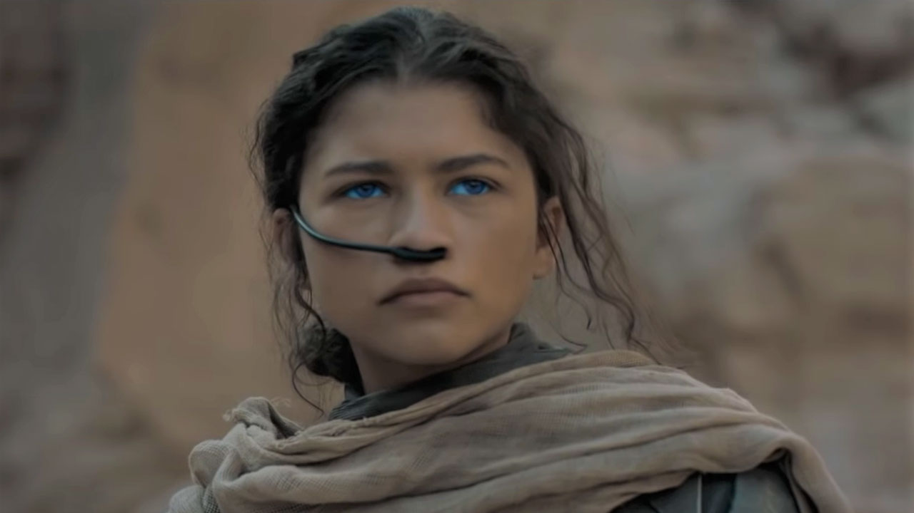

HOUSE FREMEN
Chani
Born To Defy.
Chani was born on Dune, raised in the ways of its free people the Fremen, and shaped by its wilds to be a confident and dangerous warrior. A relentless defender of the people she loves, she will rise defiant against any outsider seeking to endanger the natural beauty of her world.
